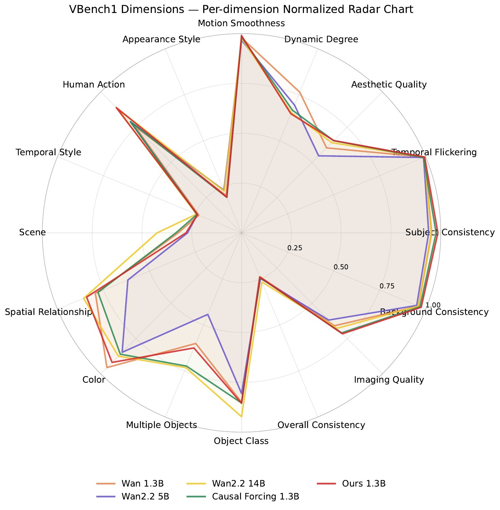
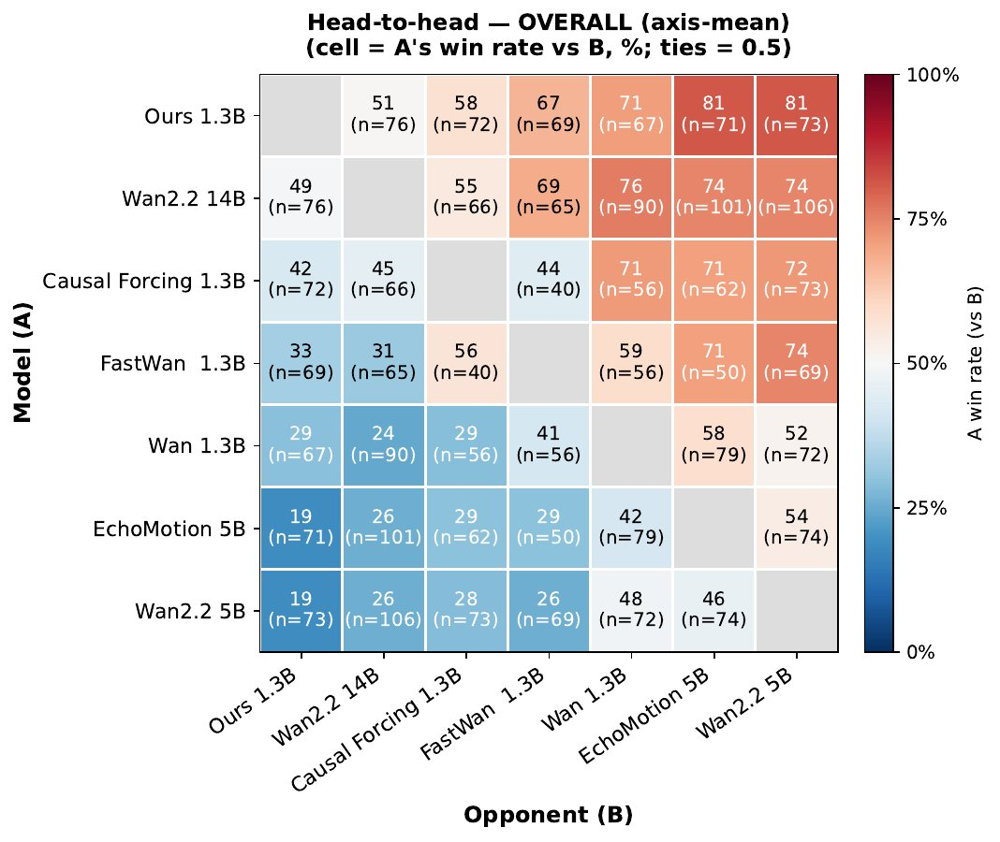
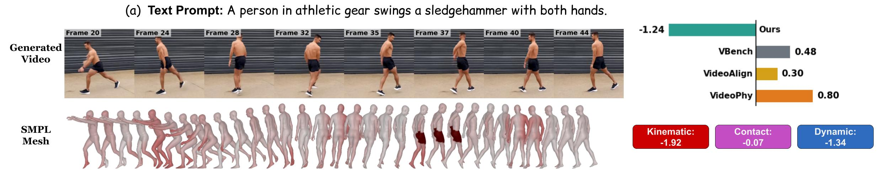

VBench dimensions

Head-to-head human preference
Generating realistic human motion is a central yet unsolved challenge in video generation. While reinforcement learning (RL)-based post-training has driven recent gains in general video quality, applying it to human motion is bottlenecked by the reward signal itself. Existing video rewards primarily rely on 2D perceptual signals, without explicitly modeling the 3D body state, contact, and dynamics underlying articulated human motion, and often assign high scores to videos with floating bodies or physically implausible movements.
To address this, we propose PhyMotion, a structured, fine-grained motion reward that grounds recovered 3D human trajectories in a physics simulator and evaluates motion quality along multiple dimensions of physical feasibility. Concretely, we recover SMPL body meshes from generated videos, retarget them onto a humanoid in the MuJoCo physics simulator, and evaluate the resulting motion along three axes: kinematic plausibility, contact and balance consistency, and dynamic feasibility. Each component provides a continuous and interpretable signal tied to a specific aspect of motion quality, allowing the reward to capture which aspects of motion are physically correct or violated.
Experiments show that PhyMotion achieves stronger correlation with human judgments than existing reward formulations. When used for RL-based post-training, it consistently improves motion realism across both autoregressive and bidirectional video generators under both automatic metrics and blind human evaluation. Ablations further show that the three axes provide complementary supervision signals, while the reward preserves overall video generation quality with only modest training overhead.
We recover SMPL body meshes from generated videos and retarget them onto a humanoid in the MuJoCo simulator. Three feasibility scores are computed per video. Pick an axis below to see the per-frame analysis and the recovered 3D body for a representative video.

Drag · scroll · right-click drag to pan
Models trained with PhyMotion as a reward produce more physically grounded human motion than general-purpose baselines. Each row shows the same prompt rendered by four models. Hover or click a video to play.
A young woman glides backward on ice skates, executing a fluid pivoting turn with sweeping arm movements and alternating supporting legs.
A person performs a leg lifting exercise while lying on their side, sequentially lifting one leg up and back down with controlled motion.
A person performs a series of fluid martial arts strikes and a powerful jumping kick
A young person lunges forward, plants their hands, kicks their legs upward through a handstand-like inversion, and lands back on their feet.
A group of people in traditional Korean attire perform the folk dance Ganggangsullae.
A young woman performs a crunch workout on a yoga mat — lying on her back with knees bent, contracting her abs to lift her torso toward her knees.
A person performs a seated rowing motion, pulling her hands back and forth.
A young boy throws a paper plane in an open field — drawing his arm back, stepping forwardy, pivoting his body, and releasing the plane.
A person performs a plank exercise with leg lifts — starting in full plank, lifting one leg straight up and returning it.
A martial artist performs a Taekwondo punch — from a ready stance, rotating the torso and extending the opposite arm in a powerful strike.
A young man sprints down a football field with powerful strides, arms swinging in sync with his legs.
A person stands upright with arms relaxed, flexing her knee to bring the heel up toward the glutes in a smooth, rhythmic exercise pattern.
A young martial artist leaps into the air, performing a disciplined jumping kick.
A single person slides the right foot smoothly backward while keeping the left foot flat and alternates.
A person performs a curling delivery on ice — gliding forward on one foot from a crouched position with the other leg extended backward for balance.

VBench dimensions

Head-to-head human preference
@article{huang2026phymotion,
title = {PhyMotion: Structured 3D Motion Reward for Physics-Grounded Human Video Generation},
author = {Huang, Yidong and Wang, Zun and Lin, Han and Kim, Dong-Ki and
Omidshafiei, Shayegan and Yoon, Jaehong and Cho, Jaemin and
Zhang, Yue and Bansal, Mohit},
journal = {arXiv preprint},
year = {2026}
}